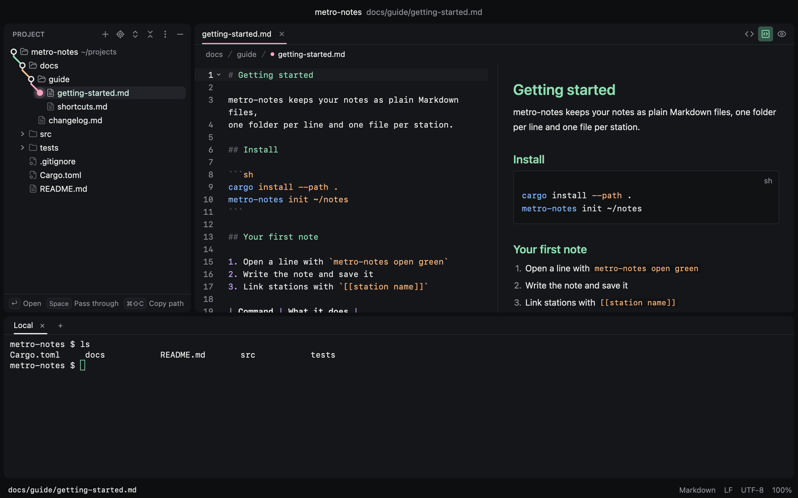

The whole window, one route.
A sample project in subwy: the tree's line leads to a Markdown file beside its preview, with the terminal below. Pick a stop to light it up.

Small, quick and quiet.
Written in Rust and drawn on the GPU, with no web view inside. An editor, not an IDE: no language servers, no plugins.
subwy 0.1.0 release build, a small project open with one Markdown file beside its preview and the terminal open. Median of five launches.
The line fills at the speed subwy opens its first window. The first launch after a build takes 1.1 s while shaders compile.
Tickets, please.
There is no download yet. Build it from source: you need macOS and Rust, and the Xcode Command Line Tools are enough.
The app is signed ad hoc, which is enough on the Mac that built it. Finder's Open With and open -a subwy then open folders and files in subwy, a new window per folder.